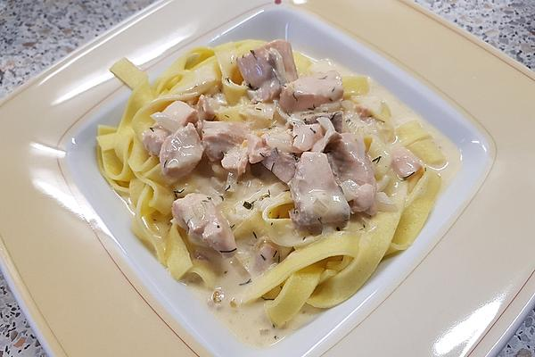

Lachsnudeln

Beschreibung
Ein einfaches Rezept für Lachsnudeln
Zutaten für 2 Portionen
- 200g Bandnudeln
- 200g Lachs (eig. Räucherlachs)
- 1 Zwiebel
- 1 Zehe Knoblauch
- 1 EL Butter
- 1 EL Mehl
- 1 EL Tomatenmark
- 1 EL Senf
- 1 Schuss Weißwein
- 1 EL Suppenpulver (Einfach Pulver für Klare Brühe für Suppen und Saucen)
- 2 Becher Sahne oder Cremefine zum Kochen
- Pfeffer
- Dill
Zubereitung
Gesamtzeit laut Rezept: 45 Minuten
Gesamtzeit von mir benötigt: 120 Minuten
- Falls frischer Lachs genommen wurde, als erstes diesen frischen Lachs braten. Räucherlachs ist schon so gut, da kann man diesen Schritt überspringen.
- Die Bandnudeln in reichlich Salzwasser bis zur gewünschten Bissfestigkeit kochen, abschütten und mit kaltem Wasser abschrecken. Beiseite stellen. Es ist nicht schlimm, wenn sie abkühlen, sie kommen später in die warme Soße und werden so wieder aufgewärmt. (Wasser für die Nudeln im Wasserkocher erhitzen und dann Nudeln und Wasser in einen Topf und erhitzen bis der weiße Schaum kommt. Dann Herdplatte abstellen und ca. 22 Minuten ziehen lassen. Dann Bissfestigkeit testen und ggf. noch etwas stehen lassen.)
- Zwischenzeitlich die Butter in einer großen Pfanne mit hohem Rand schmelzen, die gewürfelten Zwiebel und den gewürfelten Knoblauch darin glasig dünsten und dann mit dem Mehl bestreuen. Alles anbraten, bis es leicht gebräunt ist. Nun den Senf und das Tomatenmark dazugeben und mit dem Weißwein ablöschen. Alles gut durch rühren, so dass es eine sämige Soße gibt, köcheln lassen. In der Zwischenzeit 400 - 500 ml Wasser zum Kochen bringen, Wasserkocher, dazugeben und das Suppenpulver einrühren. Mit Pfeffer abschmecken und ca. einen Esslöffel Dill dazugeben, dabei ist es egal, ob man frischen, getrockneten oder gefrorenen nimmt. Ich salze die Soße nie, da das Suppenpulver und der Räucher - oder Graved Lachs, ich denke es geht aber auch mit frischem, genügend Salz abgibt. Das müsst ihr aber einfach selbst ausprobieren, wie es euch am besten schmeckt. Die Sahne oder Cremefine dazugeben und auf mittlerer Temperatur ca. 10 Minuten offen köcheln lassen.
- In der Zwischenzeit den Lachs in mundgerechte Stücke oder Streifen schneiden. Die Nudeln zur Soße geben, gut durchmischen, wenn nötig, nochmals erwärmen. Zum Schluss den Lachs vorsichtig unterheben und sofort servieren, so dass der Lachs nicht "bröckelig" wird.